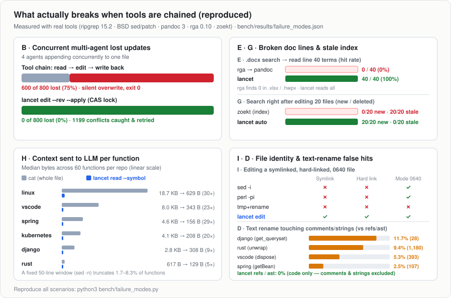

Architecture & Internals
Coordinates, OS File Locking & File Identity Preservation
How src/edit.rs guarantees symlinks, hard links, permissions, ownership, and crash-safe atomic writes.
Why build reading, AST parsing, diffing, and writing into one binary? Because across multi-step CLI chains, failures happen between tools — and every Lancet write command shares the exact same path in src/edit.rs.

7 Failure Modes Reproduced in Production Tools#
| Tool Chain | Reproduced Failure | How Lancet Eliminates It |
|---|---|---|
rg -n → 2× sed -i | Second edit hits shifted line; exits 0 | edit --edits resolves all hunks on original lines |
| 4 agents: read → mutate → write | 600 / 800 updates lost silently | edit --rev: 0 / 800 lost; losers get conflict |
patch -p1 with 1 stale hunk | File A patched, File B rejected: half-applied | patch pre-verifies all files + rolls back on race |
sed symbol rename | Mutated 0.3–11.7% comments & strings | refs/ast skip them; rename proves local scope |
rga → pandoc on .docx | 0 / 40 hit lines matched in reader | 40 / 40: search & read share one extractor |
zoekt after editing 20 files | 0 new, 20 deleted hits shown immediately | auto mode: 20 new, 0 deleted immediately |
sed -i / perl -pi | Broke symlinks/hard links, lost mode 0640 | Symlinks, nlink > 1 hard links, mode & owner preserved |
Shared Read Locks & Exclusive write_if_rev CAS#
read_shared: opens target, takes OS shared lock (lock_shared()), verifiessame_file(&f, path)(retrying up to 16×5 ms on transient Windows sharing violations if renamed mid-open), and computesrev = XXH3-64(bytes)as 16 lowercase hex digits.write_if_rev: opens target, acquires an exclusive OS lock (f.lock()), re-reads current bytes + checksinode/rev == expect_rev, and returnsWriteError::Conflict { now }(exit2) with zero bytes touched on mismatch.
How write_atomic Preserves File Identity & Crash Safety#
Instead of naive temp-rename (which breaks symlinks, splits hard links, and resets ownership), write_atomic in src/edit.rs follows four rules:
- Follows symlinks first: calls
fs::canonicalize(path)so the symlink itself stays intact and its target file is updated. - Stages & fsyncs temp file: writes to unique
.{name}.lancet-tmp.{pid}.{seq}and callsf.sync_all()first (if the disk is full, it fails before touching the original) and copies permissions + Unixuid/gid. - Preserves multiply hard-linked files: checks
nlink() > 1; if true, overwrites the existing inode in-place +sync_all()instead of renaming (because renaming would unlink and split hard-linked paths). - Atomic publish + dir sync: for single-link files, renames temp → target and calls
sync_dir(parent)so readers see either old or new contents atomically, never a torn write.